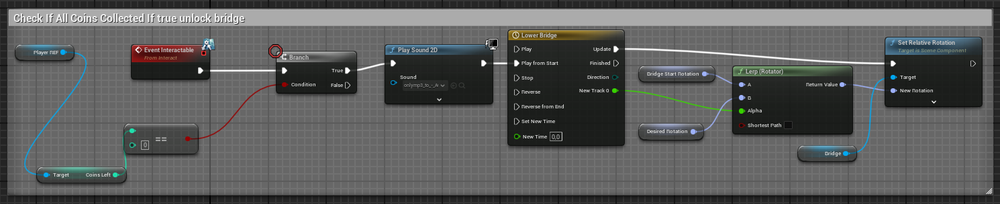
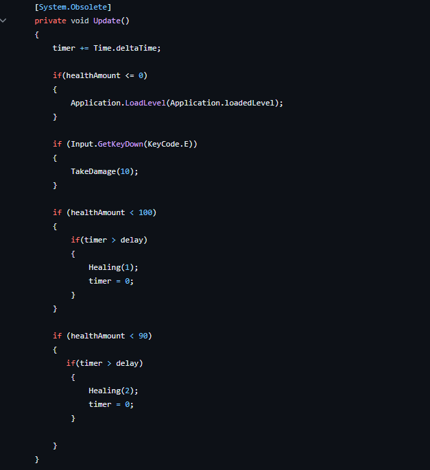
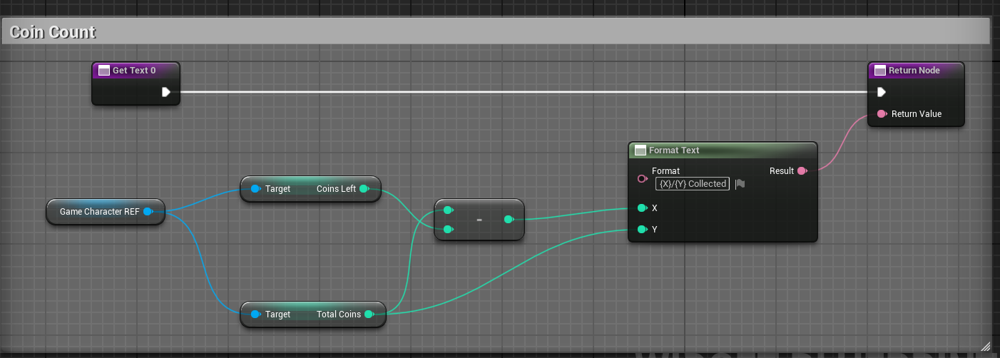

Expanding Space
Project Status: Finished
Project Type: Solo Project
Project Duration: 1 week
Software Used: Unreal Engine
Languages Used: Blueprints (c++)
Primary Role(s): UI designer/Programmer, Git master
Team: 1 dev
About Coin Collector
"Coin Collector" was a solo project to develop an engaging game that would inspire space travel and astronomy interest amongst a younger audience. It marked the first partnership between Game Developers and Game Artists, with each group comprising two developers and four artists. But our group had an extra dev who joined the project at a later date. This was also the second time we worked with sprints if i recall correctly.
My Features
- Interactable Bridge
- Collectable Coins
- Win Condition
- Coin Counter
Software Used
- Blender
- mixamo
- Trello
Intro
To start this project off, I wanted to create a simple game
too learn more about Unreal Engine.
So I decided with a Coin Collector game.
I decided just collecting coins would be too easy.
so I created a little win/lose condition to the game.
If the timer runs out and you haven't colllected all the coins
you lose the game.
Sprint 0: Initial research phase.
Sprint 1 and 2: Concentrated on creating a
playable game.
Sprint 3: Finish & Present the product on a
project market.
Interactable Bridge

In the snippet above I created a blueprint which
checks if all the coins are collected before you can interact with the bridge.
If this is true the bridge will open up and play a little sound, if this isn't
true the bridge will not open.
Development
After making an Weapon Pickup Script I thought about what would be needed to make the gun useful. So I started making a healthbar system for the game for both the enemy and player.
Collectable Coins

Here you can see the player jumping from
wall to wall.
I've also added the possibility to run and
slide in case the player engages combat.
Coin Counter

This is the blueprint I created so I can check the amount of coins
collected and the coins that needed to be collected. I did this using the
total coins and coins left.
My Test Scene:

Here i created a scene to propperly test out
simple things such as Bridge interactions, coin collecting
and hitbox testing around the third person character
The navmesh was tough to figure out, and in the end i didn't completely get it working with the enemies not moving from their position. Atleast i managed to figure out how the following Attack Function
Snippet of the EnemyAI:

The Enemy checks every frame wether the
player is in Sight- or Attack range.
So as soon the player gets within sight
range, the enemy starts looking at you.
And when you enter the Attack Range the
enemy shoots a bullet at you every 3
seconds.
Conclusion
By the end of this project, i've improved my developing skills alot during the development process of this game. I learned how to work together with artists more through communicating with them about Anchor Points in their models for example. And i had to learn each of them how Github worked and i myself learned how branches worked mid-process. Because of our little knowledge there were some bugs and errors in the Repositories so i had to make 2 new ones in total. also making use of Git LFS for the first time, since the map file was above 100Mb.
Gameplay

Here the player is picking up coins.
The player picks up
In the end the player dies eitherway and
respawns.